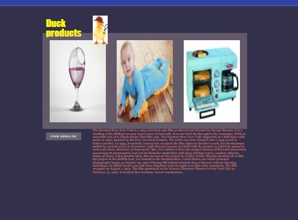
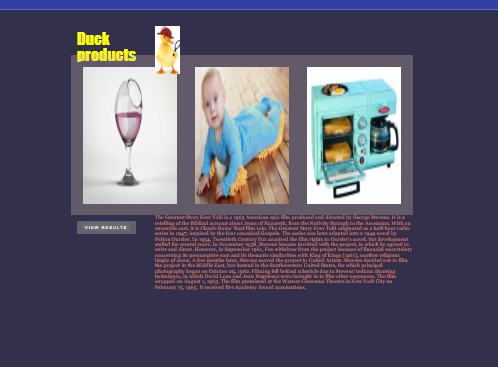

As a professional with over 10 years of working and educational experience combined, I have dedicated my life to my passion of serving people by developing my skillsets in a diverse range of fields. I do this by leveraging my skills to broaden my horizon into new and unfamiliar environments in order to deliver exceptional results that drive growth, and encourage coworkers. While also creating an environment that is both inclusive and purposeful.
Tech allows me to not only sharpen myself with a creative skillset but, encourages me to become more adaptable in a growing professional environment. Through tech I can build on my knowledge by honing areas where I'm weak, while also being able to show case areas that I excel. The best of both worlds truly.